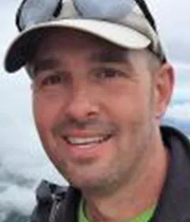
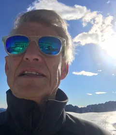
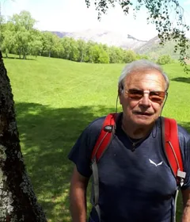
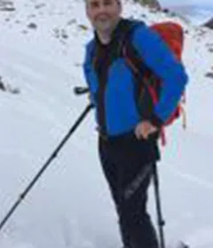
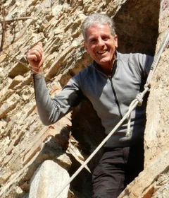
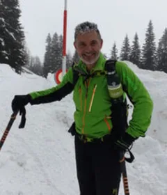
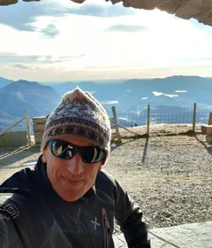
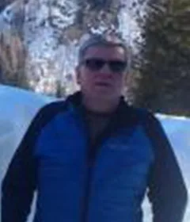
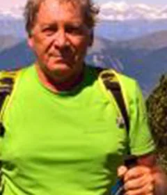

12 Mitglieder
Ressort Infrastruktur
Kümmert sich um die Infrastruktur der Sektion: Hütten und Wanderwege. Unterstützt den Vorstand in allen Fragen und Projekten rund um die Hütten. Über die Hüttenchefs begleitet es die Arbeit der Hüttenwarte, koordiniert den laufenden und ausserordentlichen Unterhalt, betreut die administrativen und vertraglichen Fragen mit den Hüttenwarten und fördert die Hütten.

Richard KnupferVerantwortlicher Hütten
Ulisse ConrengiaVerantwortlicher Wanderwege
Stefano OlgiatiVerantwortlicher Wanderwege

Edgardo BulloniTechnischer Verantwortlicher Hütten
Noch offenHüttenchef Capanna Michela Motterascio

Edy GalliHüttenchef Capanna Campo Tencia

Fabio SavoldelliHüttenchef Capanna Adula

Marzio PaganiHüttenchef Capanna Cristallina und Baita del Luca

Francesco MattinelliHüttenchef Capanna Cristallina

Erico FogliadaHüttenchef Capanna Monte Bar

Mauro ScalmaniniHüttenchef Capanna Monte Bar

Roberto GrassiHüttenchef Capanna Monte Bar